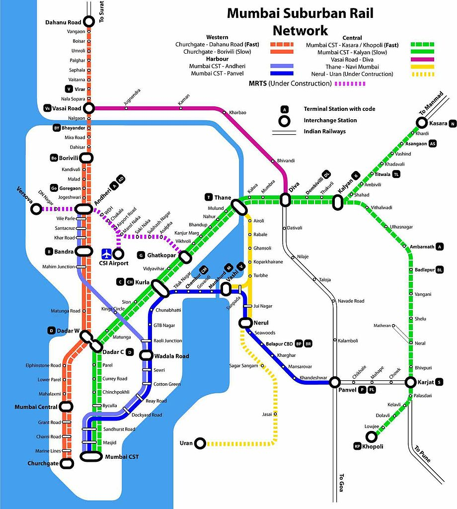
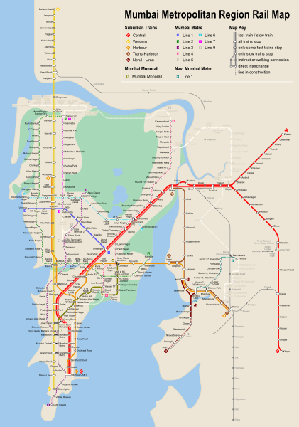

Travel
Transportation services
The road network surrounding Mumbai, including the Eastern Express Highway, Western Express Highway, LBS Marg, Sion-Panvel Expressway, and Western Freeway, is integral to connecting the city with its suburbs and neighboring regions. These thoroughfares ensure efficient travel for vehicles, facilitating the seamless transportation of goods and commuters. By alleviating congestion and supporting Mumbai's economic activities, they play a crucial role in enhancing regional connectivity and fostering sustainable urban development across the metropolitan area.
Taxi Services
Enjoy convenient rides with app-based services like Ola and Uber or traditional taxis.
- Region of Service: Throughout Mumbai and suburban areas.
- Minimum Fare: ₹22 (non-AC) / ₹25 (AC)
- Operators: Ola, Uber, Meru, and local taxi operators.
- Ease of Service: Easily accessible through mobile apps or street hailing.
Auto-Rickshaw Services
Ideal for short distances and specific neighborhood explorations within Mumbai.
- Region of Service: Primarily within city limits, often not allowed on highways.
- Minimum Fare: ₹18 for the first 1.5 km
- Operators: Individual drivers; no centralized operators.
- Ease of Service: Easily available on streets; fares are metered.
Bus Services
Explore Mumbai with comprehensive city tours provided by MTDC and private operators.
- Region of Service: Extensive network covering all parts of Mumbai and surrounding areas.
- Minimum Fare: Varies by route; generally starts from ₹5 for short distances.
- Operators: BEST (Brihanmumbai Electric Supply and Transport) and private operators.
- Ease of Service: Regular schedules; crowded during peak hours; affordable fares.
The Mumbai Local Rail Network serves as Mumbai's vital lifeline, connecting its diverse suburbs to the bustling urban core with extensive coverage across Western, Central, and Harbour lines. Operating 24/7, it provides affordable, efficient travel for millions, easing congestion and enhancing urban mobility. Despite challenges like peak-hour crowding, ongoing advancements in technology and infrastructure ensure a reliable and inclusive transit experience, integral to Mumbai's dynamic cultural and economic landscape.

Central Railway
Serving Mumbai's eastern suburbs and beyond with fast and slow train services.
- Region of Service: Covers areas like CST, Dadar, Thane, Kalyan, etc.
- Fare Structure: Based on distance traveled; economical and efficient.
- Operator: Central Railway
- Ease of Service: Regular schedules; busy during peak hours; ticketing available at stations.
Western Railway
Connecting Mumbai's western suburbs and downtown with fast and slow train options.
- Region of Service: Covers Churchgate, Bandra, Andheri, Borivali, Virar, etc.
- Fare Structure: Distance-based; offers affordable travel options.
- Operator: Western Railway
- Ease of Service: Regular schedules; crowded during peak times; ticketing available at stations.
Harbor Line
Servicing Mumbai's harbor area with connectivity from CST to Panvel and beyond.
- Region of Service: Covers areas like CST, Wadala, Vashi, Nerul, Panvel, etc.
- Fare Structure: Similar to other lines; economical for regular commuters.
- Operator: Central Railway
- Ease of Service: Regular schedules; less crowded compared to other lines; tickets available at stations.

Trans-Harbor Line
Connecting Navi Mumbai with Mumbai's suburbs, offering essential connectivity.
- Region of Service: Connects Navi Mumbai (Panvel) to Thane.
- Fare Structure: Similar to other lines; convenient for inter-suburban travel.
- Operator: Central Railway
- Ease of Service: Regular schedules; less crowded compared to main lines; ticketing available at stations.
Mumbai Local Train Services Map
Explore the extensive local train network that covers Mumbai and its suburbs.
The Mumbai Metro has revolutionized urban transit in the city, offering efficient, fast, and comfortable transportation options to millions of commuters. With air-conditioned coaches, frequent services, and modern amenities like Wi-Fi enabled stations, the metro system has not only reduced travel time significantly but also alleviated traffic congestion on Mumbai's roads. It provides a reliable alternative to traditional modes of transport, promoting sustainability and enhancing connectivity across the city.

Metro Line 1
Versova-Andheri-Ghatkopar Metro Project.
- Route: Versova - Andheri - Ghatkopar
- Operator: Mumbai Metro One Pvt. Ltd.
- Features: Air-conditioned, frequent services, smart card ticketing, Wi-Fi enabled stations.
- Travel Time Comparison: Faster than road transport during peak hours.
- Online Booking: Available on Reliance Mumbai Metro
- Fares: Varied based on distance, with daily, weekly, and monthly passes available.

Metro Line 2B
D.N. Nagar to Mandale Metro Line.
- Route: D.N. Nagar - Mandale
- Operator: Mumbai Metropolitan Region Development Authority (MMRDA)
- Features: Under construction, expected to enhance connectivity in western Mumbai, Wi-Fi enabled stations.
- Travel Time Comparison: Estimated to reduce travel time significantly compared to buses.
- Online Booking: Available on MMRDA Metro Line 2B
- Fares: To be updated upon completion, with expected fare structure similar to existing lines.

Metro Line 7
Andheri East to Dahisar East Metro Line.
- Route: Andheri East - Dahisar East
- Operator: Mumbai Metropolitan Region Development Authority (MMRDA)
- Features: Under construction, aims to reduce travel time and congestion, Wi-Fi enabled stations.
- Travel Time Comparison: Expected to offer faster travel than current bus routes during peak hours.
- Online Booking: Available on MMRDA Metro Line 7
- Fares: To be confirmed upon operational start, with anticipated competitive pricing for daily commuters.
Mumbai Metro Services Map
Explore the metro network that covers Mumbai's major areas.